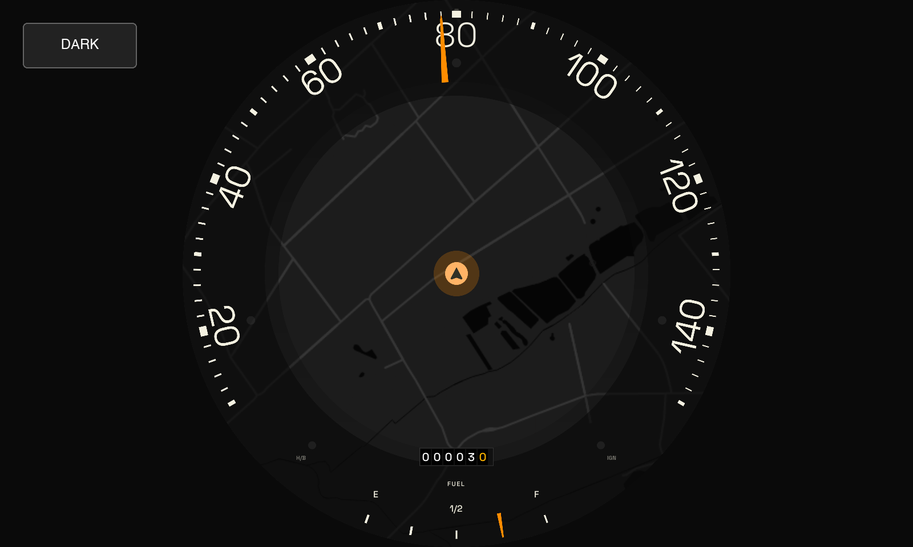

Automotive UI,
Reimagined.
A beautiful, reactive car instrument dashboard interface. Experience a fluid speedometer, adaptive theme profiles, and responsive vector tile map rendering clipped inside a physical circular dial.

Technical Specifications
High-Performance Core
Leverages native multi-threading to coordinate tasks. Separates user interface updates from background processing to guarantee zero frame drops.
Reactive Layout System
Constructed using a declarative composition model. Keeps states, layout scales, and coordinates bound together reactively for optimal visual presentation.
Vector Tile Rendering
Background maps are loaded directly from cached vector data. Tiling and rendering happen on-the-fly, clipped and rasterized inside a circular mask.
Time-Adaptive Themes
Includes built-in Night-Time logic which monitors clock coordinates (6 PM to 6 AM) to automatically switch the interface theme between high-contrast light and deep black.
Responsive UI Scaling
Coordinates display geometries via mathematical formulas. Guarantees perfect proportioning regardless of window scale.
Automotive Integration
Interfaces directly with vehicle communication buses to display live engine telemetry, electrical diagnostics, fuel levels, and real-time warning indicators.